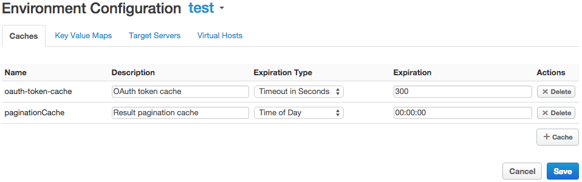

When you don't want to use the included shared cache, you can create and configure your own cache. You can use the cache you create beneath caching policies, rather than using the shared cache.
[toc]
For guidance on which type of cache or persistence to use in different situations, see http://docs.apigee.com/node/18586.
You can create multiple cache resources in each environment. When you're configuring a caching policy, you specify whether the policy should use the included shared cache or a cache you created.
For data segregation, the scope of a cache is limited to the environment in which you created the cache. (For example, API proxies running in a 'test' environment cannot access data in a cache running in 'prod'.) Once you create a cache, policies can populate it with any serializable data. For usage, see http://docs.apigee.com/node/259.
See also: http://docs.apigee.com/node/26.
These steps describe how to create or edit a cache using the management console.

| Property Name | Default Value | Description | Notes |
|---|---|---|---|
| Name | N/A | The name of the cache. Must be unique in the environment. Reference this cache from policies that interact with the cache resource. | |
| Description | N/A | An optional description of the cache resource. | |
| Expiration Type | Timeout in Seconds | Sets how cache entries will be expired. Entry time to live can be a specified number of seconds after creation, a specified time of day each day, or a specified date. | http://docs.apigee.com/node/15596 and http://docs.apigee.com/node/26 both override these expiration settings with their own for cache entries they create. |
| Expiration | For timeout in seconds: 300 (seconds)
For time of day: 12:00:00 For date: current date (dd-MM-yyyy) |
The configuration setting (either integer or dateTime) for the selection you made in the Expiration dropdown.
Enter time of day in the format HH:mm:ss, where HH represents the hour on a 24-hour clock. For example, 14:30:00 for 2:30 in the afternoon. For the time of day, the default locale and time zone will vary depending on where the code is running (which isn't knowable at configuration time). For information on configuring your locale, see http://docs.apigee.com/node/10170. |
You can populate cache during API proxy runtime in the following ways.
Cache keys are limited to a size of 2 KB.